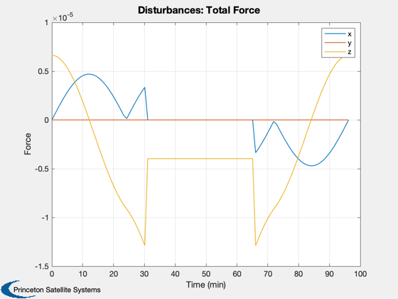

Disturbance analysis of two thin plates.
This model mimics the effect of two solar panels which often dominate the disturbances at higher altitudes. The analysis is performed in LEO. Two pointing modes are available: ECI pointing with the arrays towards the sun, and Earth pointing with the plates facing the Earth.
Things to try:
- Vary the orbital parameters - Add an additional rotation to the LVLH pointing
See also BuildFlatPlates, Disturbances, EarthEnvironment
Contents
%-------------------------------------------------------------------------- % Copyright (c) 2000-2003, 2015 Princeton Satellite Systems, Inc. % All rights reserved. %--------------------------------------------------------------------------
Parameters
Choose the pointing method and specify the orbit. Load the CAD model from a mat file and display it.
% Pointing Method %---------------- % Select between Earth and ECI pointing via a flag and clean up workspace % variables. Set true for Earth pointing and false for ECI pointing. earthPointing = true; % Orbital parameters %------------------- rOrbit = 7000; inclination = 0.0; % radians eccentricity = 0.0; % Load the model and display it %------------------------------ g = load('FlatPlates'); DrawSCPlanPlugIn(g)
ans =
'DrawSCPlanPlugIn12 35.5802 98.6104'
Perform the disturbance analysis
We will do 100 samples in a circular low Earth orbit. This will open several windows.
% Get the default data structure to fill in %------------------------------------------ d = Disturbances( 'defaults' ); % Generate orbit %--------------- nSamp = 100; period = Period( rOrbit ); jD0 = FindSolsticeOrEquinox( 'spring equinox' ); d.tSamp = period/nSamp; elements = [rOrbit inclination 0 0 eccentricity 0]; t = linspace(0,period,nSamp); [d.r,d.v] = RVFromKepler(elements,t); PltOrbit( elements, jD0 ); % Initialize the disturbance model %--------------------------------- e = EarthEnvironment( d.r, d.v, JD2Array( jD0, t ), d ); hD = Disturbances( 'init', g, e ); % Create the transformation matrix arrays %---------------------------------------- % Align the plates, with a z normal, with the x axis bZToX = Eul2Mat([0;pi/2;0]); for k = 1:nSamp if( earthPointing ) g.body(1).bHinge(k).b = Q2Mat( QLVLH( d.r(:,k), d.v(:,k) ))'; else % Point at the sun assuming equinox g.body(1).bHinge(k).b = bZToX; end end % Run the analysis %----------------- Disturbances( 'run', g, e, hD ); Figui; %--------------------------------------